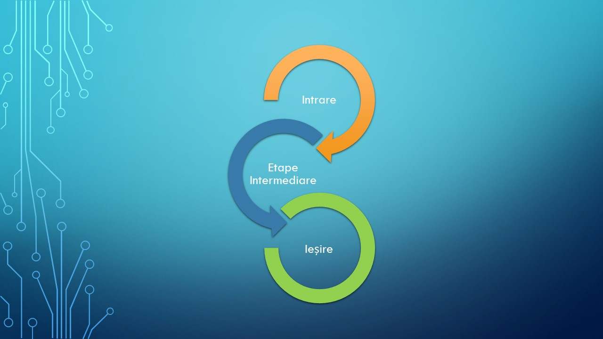
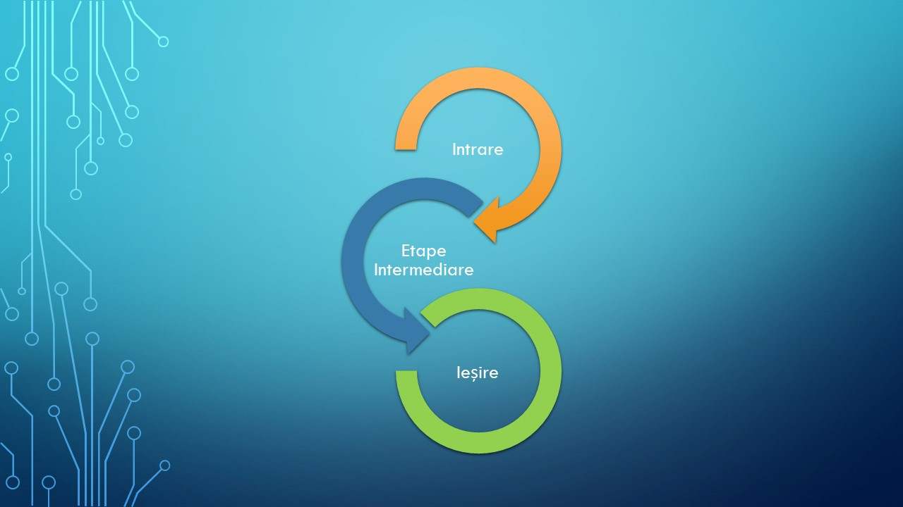

Algoritmii în informatică

Pornind de la date de intrare, urmând o succesiune de etape, obținem date de ieșire.

Pornind de la date de intrare, urmând o succesiune de etape, obținem date de ieșire.
Pentru a avea un flux de lucru (workflow) cât mai bun în aplicații trebuie ca algoritmii pe care îi creăm să se execute cât mai repede, într-un timp finit.
De exemplu: populare listelor de tip dropdawn cu date, autocompletarea casuțelor text, afiseare ferestrelor, generarea unui raport etc.
Modul în care redactăm un algoritm este foarte important. Trebuie să căutăm să structurăm rezolvarea problemelor într-un mod precis și consecvent și să nu uităm să adăugăm comentarii la etapele de rezolvare.
În construirea algoritmilor trebuie să căutăm ca aceștia să poată să rezolve probleme cu valori asemănătoare.
În practică evităm să creăm algoritmi de rezolvare a problemelor pentru cazuri speciale.
De exemplu dacă într=o problemă variabila x=3, încercăm să formulăm rezolvarea problemei pentru oricare ar fi x în intervalul [a,b].
De ce ? : Pentru că durata de implementare a algoritmilor în informatică este de obicei foarte mare, iar utilitatea în rezolvarea problemelor cu ajutorul calculatorului constă în abilitatea de a reutiliza algoritmii pentru a soluționa probleme cu date de intrare diferite, dar, din aceiași clasă (au valori de intrare și ieșire cu o formă similară).